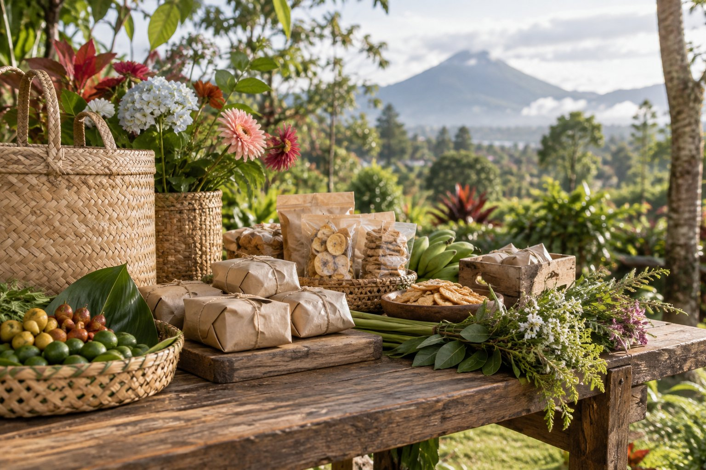

Kategori Kuliner
Pabrik Tahu
Tempat untuk menampilkan makanan dan minuman produksi warga, lengkap dengan nama usaha dan kisah di baliknya.
Kenali masyarakat, sejarah, potensi lokal, dan kehidupan di Kamasi Satu, Kecamatan Tomohon Tengah, Kota Tomohon, Sulawesi Utara.


Kamasi I merupakan bagian dari Kecamatan Tomohon tengah, Kota Tomohon, Sulawesi Utara.
Total Keseluruhan Penduduk
Sebaran penduduk
Data simulasi untuk kebutuhan desain. Perbarui angka, persentase, dan nilai grafik setelah data resmi tersedia.

Kategori Kuliner
Tempat untuk menampilkan makanan dan minuman produksi warga, lengkap dengan nama usaha dan kisah di baliknya.
Kategori Kuliner
Ruang bagi karya tangan dan produk kreatif yang kelak dapat diperbarui sesuai pelaku UMKM sebenarnya.
Kategori Kuliner
Contoh kategori untuk usaha tanaman, bunga, atau hasil kebun yang relevan setelah data lapangan tersedia.
Catatan wilayah / Kamasi 1
Sejarah yang baik tumbuh dari cerita warga, arsip, dan catatan yang bisa ditelusuri. Bagian ini siap menampungnya ketika data asli telah tersedia.
Periode awal · tahun belum diisi
Kisah awal Kamasi 1 dapat ditelusuri melalui ingatan warga dan dokumen setempat. Narasi contoh ini menunggu sumber yang dapat diverifikasi.
Perkembangan · tahun belum diisi
Lingkungan tempat tinggal dan aktivitas warga berubah seiring waktu. Ruang ini disiapkan untuk mencatat peristiwa penting secara berurutan.
Masa kini · tahun belum diisi
Catatan masa kini akan menghubungkan ingatan lama dengan kehidupan warga sekarang dan menjadi bekal untuk generasi berikutnya.
Kenali susunan kerja pelayanan Kamasi 1. Jabatan dan nama di bawah hanya contoh tata letak, menunggu struktur resmi yang akan Anda lengkapi.
Pimpinan wilayah · contoh jabatan
Jabatan resmi akan diisi
Contoh bidang
Nama dan jabatan belum diisi
Contoh bidang
Nama dan jabatan belum diisi
Contoh bidang
Nama dan jabatan belum diisi
Diagram ini hanya contoh desain. Sesuaikan jumlah jabatan, hubungan kerja, dan nama berdasarkan dokumen organisasi terbaru sebelum dipublikasikan.
Bagian ini disiapkan sebagai pintu informasi bagi warga. Perbarui detail resmi di bawah sebelum situs digunakan sebagai kanal layanan.
Kamasi Satu / Tomohon Tengah
Informasi yang jelas membantu warga menemukan layanan dan menghubungi pihak yang tepat.
Tomohon Tengah, Sulawesi Utara
Alamat lengkap belum diisi
Nomor telepon dan alamat email belum diisi
Hari dan jam pelayanan belum diisi
Peta wilayah
Peta ini menampilkan kawasan Kelurahan Kamasi Satu, bukan penanda alamat kantor kelurahan.